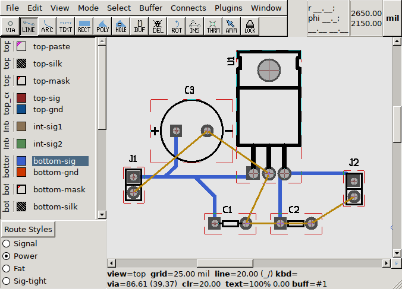
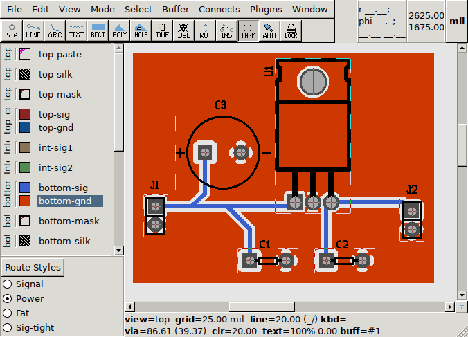

Start pcb-rnd - it will start with an empty board (loaded from the default board, as configured).
Pan: click with the scroll wheel of the mouse (or middle button) and move the mouse; alternatively use the scroll bars at the bottom and right of the editor area. Zoom: scroll wheel.
Press key w then key l (which will be written as {w l} in this tutorial). This will open the library window ({w l} is for "window, library"). The library window has a filter entry on the bottom left: enter acy(200) there and the preview on the right side will show an axial lead footprint with 200 mil pin distance. Although a typical thru-hole ceramic capacitor is not axial lead, it will fit nicely in this footprint:
The footprint is in the paste buffer and the buffer tool is selected (which is visible on the overhead tool bar under the menu). Place the buffer on the board by a left click. You can exit the buffer mode by pressing the escape key or F11.
The placed footprint is called subcircuit or subc for short. The subc has a refdes (the main ID of the subc) reading "R1". Grab this "R1" with a left click and move it out from the middle of the subc and drop it near the subc so it is readable. Rename the subc to "C1" by pressing {e r} while hovering the mouse cursor over the subc body (not the refdes text); {e r} is for "Edit Refdes".
Select the subcircuit by clicking it - any point where the subcircuit has graphics would work, within the red dashed subc frame. The subc will turn cyan. Note: the refdes text is selected separately from the subc. Make sure to click on the silk screen graphics (black lines) or a pin to make the whole subc cyan, not just the refdes text.
Once selected, press {e c} ("edit, copy") which will copy the modified subc to the buffer and will select the buffer tool. Now place it next to the original subc and modify its refdes to "C2".
Place the rest of the subcircuits using the same method. It's best to keep the library window open for all these placements:
To ease laying out the board, we create a net list by drawing rats. Rat lines are logical connections between terminals. A terminal is a pin or pad of a component, addressed as refdes-termid, where refdes is the host subcircuit's refdes and termid is the unique terminal ID within the subc. The drawing already has unique refdes assigned to each subc and the stock footprints we worked from already have unique terminal IDs.
Note: terminal IDs can be shown or hidden by hovering over the subc or the terminal and pressing {v n} (for "view name"). The ID shows up printed over the terminal (pin in our case) with tiny red letters - zoom in to see them. A tooltip also shows the terminal ID after hovering the mouse cursor over the terminal for a few seconds1.
Select the Rats layer on the left - it is part of the "Virtual" layer group on the bottom. Select the line tool on the overhead toolbar (second icon from the left).
Start drawing a line from J1's terminal 2 (the round one) by left-clicking it. Left click C1's terminal 2. This is a new logical connection, a new net, so a popup dialog will ask for the net name. Enter gnd and press enter.
The rat line drawing is still active from the last terminal, so go on connecting C2's terminal 2, J2's terminal 2, U1's middle terminal and C3's negative terminal. Since these connections are all extending the gnd network, no net name is asked. When finished, press esc or F11. Don't mind what your rat lines cross: only the two endpoint of a rat line matter.
Press {w n} to open the network window:
Note: you can zoom/pan the preview on the top right the same way as the main drawing. If the network selection on the left changes, the right side is updated. The preview highlights affected terminals.
Select the line tool (hotkey: F2). Select the 'Power' style from the bottom left style selector - this will get the traces you'll be drawing thicker. Select the bottom signal layer, called "bottom-sig" in the layer selector on the left. This way the new traces will end up on copper on the bottom side of the board.
Start drawing a line from J1-1 with left click. The line will bend in 45 degrees. You can press the shift key and move the mouse to invert the refraction temporarily, or use the slash key to cycle through different refraction (including the ortho mode, which allows 90 degree lines only). With 2..3 clicks, connect J1-1 and C3's '+' pin.
Now that one of the logical connections is turned to copper, press {c r} (for "connection, refresh rats") - this will recalculate all rats, considering already established connections.
Draw the remaining segments of the in net, using {c r} to see the progress. The number of remaining rat lines is also printed in the message log, which can be opened using {w m}.
Do the same for the out network. At the end only the gnd network should remain unrouted:

We could route the gnd net the same way, using thick traces. However, it's more common to have a solid ground plane/pour, which is a polygon in pcb-rnd.
Select the bottom-gnd layer. This layer is in the same layer group, bottom copper, as the other layer we used, so at the end it will go on the same physical copper layer. However, it has a different color configured on screen, which would make it easier to see what's connected to gnd.
Select the rect tool from the toolbar. This will draw a rectangular polygon. Do a single click on the top left corner of your circuit. After releasing the mouse button, the rectangle tool draws an overlay indication on how big the polygon would be. Move the mouse cursor to the bottom right corner until the box encloses the whole circuit and some margin and do another single click.
This will finish the operation and a large red rectangular polygon will appear. However, {c r} shows that no gnd rat line got routed: the terminals of the subcircuits won't automatically touch the polygon. The easiest way to get them connected is using the thermal tool (labelled THRM in the toolbar). Select the thermal tool and click on the J1-2. An X shaped connection will appear to the polygon.
Note: it's important to still have the bottom-gnd layer selected: the thermal tool connects the terminal to the polygon on the currently selected layer, so the currently selected layer should be the one we drew the ground plane polygon on.
Another click on the terminal would remove the thermal - it's a toggle operation. When the thermal is there, a shift+click with the thermal tool will change the thermal style, cycling through different available styles.
Use the thermal tool to connect all gnd terminals and press {c r}.

We've been drawing the board from looking at it from the top, with 'x-ray vision', seeing all copper on the bottom. Once the board is fabricated, this is not how we'll see it.
It is possible to flip the board using the tab key, to get a bottom view. There's also shift-tab an ctrl-tab to flip among different axes. Flipping is a view-only feature, it does not modify any geometry or physical property of the board.